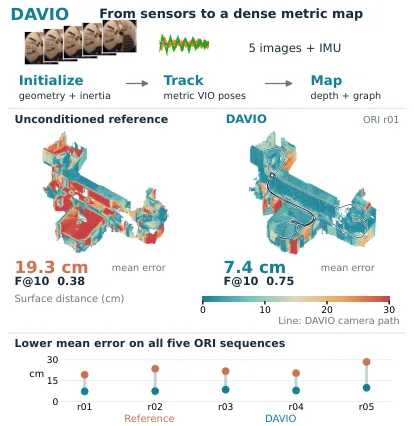
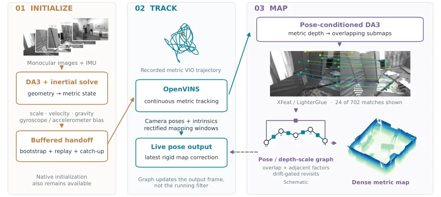
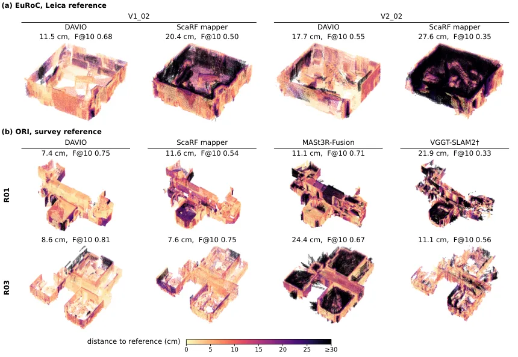

DAVIO：用前馈初始化与位姿条件化建图的稠密单目—惯性 SLAM
DAVIO: Dense Monocular-Inertial SLAM with Feed-Forward Initialization and Pose-Conditioned Mapping
把前馈几何模型放在 VIO 滤波器的两侧——前面负责无特征点启动、后面接受滤波器米制位姿的条件化来产稠密地图，尺度只在视线方向修正而不动基线。
median time to first state
median global error on ORI
作者、单位与技术谱系 · Research context
作者与单位
研究脉络
- Efficient feature-free initialization for monocular visual-inertial systems（Zhang et al., 2026，arXiv:2605.17327）方法基座关系：DAVIO 直接沿用其无特征点启动表述并补上持续运行所需的组件[arXiv 官方 HTML v1]
- Depth Anything 3（Lin et al., 2025，arXiv:2511.10647）方法基座（感知模型）关系：同一模型同时充当启动与建图的几何来源[arXiv 官方 HTML v1]
- ScaRF-SLAM（Zhang, Tao, Dellaert & Fallon, 2026，arXiv:2606.00307）上游方法（最接近的对照路线）关系：同样用经典跟踪位姿条件化 DA3 并优化帧/子图尺度，本文在两点上分道[arXiv 官方 HTML v1]
- OpenVINS（Geneva, Eckenhoff, Lee, Yang & Huang, 2020）方法基座（滤波器）关系：DAVIO 通过其未修改的初始化入口写入状态，速度与零偏仍由它维护[arXiv 官方 HTML v1]
合作网络
- 论文署名与单位DAVIO 论文署名作者 → ITMO University BE2R Lab（Saint Petersburg）关系：署名单位[arXiv 官方 HTML v1]
- 官方发布页DAVIO 论文作者 → be2rlab.github.io/DAVIO关系：官方项目页（作者声明放出代码）[arXiv 官方 HTML v1]
- 几何模型依赖DAVIO（启动与建图两条路径） → Depth Anything 3（DA3-Base / DA3-Large）关系：明确技术依赖[arXiv 官方 HTML v1]
- 相对尺度残差来源DAVIO 子图图优化的相对尺度残差 → UniSim-slam（Lee, Jeong, Lee & Joo, 2026，arXiv:2608.01706）关系：明确技术依赖[arXiv 官方 HTML v1]
署名、单位、资助与项目地址来自论文作者块、脚注与正文自述；技术接续来自相关工作段落的显式表述与参考文献编号。除署名关系、明确的技术依赖与引用关系外，未发现公开证据支持的跨团队合作或师生关系，相关推断不作补写。
方法本质拆解 · What actually changed
是不是微调？
不是微调。DA3-Base（或 DA3-Large）以冻结权重直接推理，论文没有对它做任何训练或适配；VIO 滤波器也是未修改的 OpenVINS。发生变化的只有“状态”：启动时把解出的尺度、重力、速度与零偏一次性写入一个全新的 OpenVINS 实例，跟踪时把滤波器的米制位姿作为条件输入给深度模型。
有没有额外约束？
有，而且约束对象很明确。启动侧在尺度与重力上加了列均衡奇异值比、基线—深度比 0.02、内点比例 0.4、中位残差 0.05、速度与重力方向物理合理性等阈值；精化侧用 softplus 保证尺度正定、在球面切空间参数化重力，并保留尺度先验与零偏先验。建图侧把尺度约束限制为“只作用于深度、按单位几何均值归一化”，并用漂移门控决定重访的点群能否进入位姿问题。
推理/后端到底做了什么？
推理有两级：启动时是一次解析线性求解加两轮切空间重力精化，再加最多 8 s 的缓冲回放与 0.15 s 追赶判据；跟踪时是窗口内八轮深度归一化重加权最小二乘（解每帧尺度）与子图图上最多八次 Levenberg–Marquardt 迭代（解平移、偏航与子图尺度）。没有全局 BA、没有位姿图之外的后端，滤波器状态在整段运行中从不被地图更正修改——地图更正只以“刚体修正”的形式作用到之后发布的位姿上。
方法本质是什么？
本质是给两个互补模态各找一个“它最擅长、且失败代价可控”的作用位置：惯性负责给出尺度、重力与在线状态，前馈模型负责给出稠密结构与启动所需的几何冗余。为了让学习模型的尺度误差不污染米制基线，残余尺度被严格限制在深度回投影的视线方向上；为了让漂移修正不污染因果估计，回环只在漂移超过约束不确定度时才允许移动位姿。它没有做的是：不训练、不改滤波器、不做全局平差，也不在启动阶段依赖特征点跟踪。
输入=五帧图像窗口与预积分 IMU（跟踪阶段再叠加滤波器米制位姿）；改变的位置=滤波器的启动状态与地图的深度尺度（不动位姿基线）；动作=无特征点线性求解 + 稳健/条件数/物理三重检验 + 仅沿视线的尺度修正 + 重力保持子图图优化与漂移门控重访；直接效果=EuRoC 首状态中位 2.43 s、同姿态下 Vicon 房间地图中位 F@10 0.58、ORI 全局误差中位 0.080 m。

动机与问题Motivation
动机与问题
论文把两类模态的缺口写得很具体：惯性量测只有在足够运动把比力与重力分开之后才能定出米制尺度，因此经典 VIO 必须“等视差”，而一旦初始化完成，它们只维护稀疏路标，对导航等下游任务远远不够；相反，DUSt3R/MASt3R/VGGT/DA3 一类前馈模型能在一次前向里给出稠密点图或深度，但输出严格未标定——没有米制尺度、没有重力方向、没有速度与 IMU 零偏。作者同时点出单目前馈 SLAM 的既有做法（如 MASt3R-SLAM、VGGT-SLAM、ScaRF-SLAM）需要在每个子图里恢复尺度，而 DAVIO 的窗口内平移已经是米制的，因此它选择保留基线、只在预测最不确定的深度回投影处施加残余尺度修正。第三个动机是可靠性：如果初始化失败却把错误尺度写进滤波器，代价极高，所以作者要求“宁可拒绝，也不传错尺度”。
方法Method
方法总览
系统由两条并行进程组成（图 2）：一条跑 OpenVINS 滤波器做视觉—惯性里程计，另一条单 worker 承载 GPU 上的 DA3。启动阶段取间隔 0.2 s 的五帧图像构成几何窗口，DA3 给出逐图像深度、置信度、内参与相对位姿，逐图取置信度高于第 25 百分位的最多 100 个点构成无特征点线性系统，解出尺度与重力方向后经稳健/条件数/物理合理性三重检验，再把精化后的状态一次性写进一个全新的 OpenVINS 实例；写状态期间到达的量测被缓存并在最多 8 s 内以快于实时的速度回放，只有当新实例连续五个状态与实时流差距小于 0.15 s 时才接管，否则 3 s 内放弃、最多尝试五个候选，而原 OpenVINS 初始化器始终保持待命。跟踪阶段角色反转：worker 以 0.5 s 关键帧间隔组五帧窗口（相邻窗口共享两帧），把滤波器米制位姿与被校正后的内参交给 DA3，形成互相重叠的深度子图，并在窗口内用每帧深度尺度、跨窗口用共享图像的中位对数深度比约束一个保持重力的子图图优化。
关键技术细节
线性系统的维度分析是这篇论文最值得读的部分：当 DA3 的相对旋转与预积分一致时，每个点的深度分量被视线方向湮灭，方程退化为“缩放后的 DA3 相机中心必须等于 IMU 积分位置”，该矩阵秩为二，因此每张图无论采样多少点最多只提供三个独立方程给七个未知量，至少需要四张图，五帧窗口只多出一张图的冗余；作者进一步指出若上尺度轨迹至多关于时间二次（启动时常见的匀速运动就是典型实例）则尺度变化可被吸收，故必须显式拒绝退化。接受条件因此写成三条数值护栏：至少四张图、列均衡后奇异值比不低于给定阈值、基线—深度比不低于 0.02，并明确声明这是数值防护而不是可观测性证明。稳健估计用 100 个假设的最小中位数平方（LMedS），每个假设从每张非参考图取两点（因为两点已饱和该图的秩三贡献），并按尺度归一化残差打分以免偏向小尺度；按内点比例至少 0.4、中位残差不超过 0.05，加上速度与重力方向的物理合理性检验，不合格窗口直接拒绝。精化阶段用 softplus 参数化保证尺度严格为正，重力用切空间二维坐标参数化，配合 Huber 损失与各项先验；建图侧每帧尺度只作用于深度并投影到单位几何均值，子图图优化只优化平移、绕重力偏航与尺度，保留滤波器给出的横滚与俯仰，尺度约束与位姿约束分别门控——验证过的重访只有在其里程计漂移超过该约束不确定度时才允许点群进入位姿问题。

实验Experiments
实验设置
数据集两个：EuRoC（Machine Hall 与两个 Vicon 房间共十一段序列，提供 OpenVINS 参考轨迹与六个 Vicon 房间序列的 Leica 扫描）与 ORI（R01–R05 五段建筑尺度序列，带测量级 LiDAR 参考）。启动评测沿用 132 个十秒窗口（每 10 s 启动一次，Machine Hall 67 个、Vicon 65 个），窗口成功定义为其中发布了 ATE 低于 0.5 m 的轨迹；报告首个状态时间 t_first 与对每次失败加罚 10 s 的质量惩罚时间 t_q，并给出重力方向、速度与轨迹误差中位。轨迹指标为一次刚性对齐（不做尺度）后的平移 RMSE，覆盖率为发布位姿覆盖的序列比例；表面指标以 10 cm 阈值报告 precision、recall 与 F@10，EuRoC 导出 4 cm、ORI 导出 2 cm。对照分三类：匹配位姿对照用 ScaRF-SLAM 发布 mapper 在同一 OpenVINS 位姿与同一 DA3-Base 上离线运行以隔离建图层；端到端对照用 ORB-SLAM3 单目惯性（原厂 EuRoC 配置，三次运行）、MASt3R-Fusion（隔帧输入）与 VGGT-SLAM2（其默认参数并额外做一次全局拟合，对其有利）；平台为 i7-12700H 笔记本加 RTX 3060 Laptop 6 GB，DA3-Base 分辨率 504 px 并按传感器速率节流。
实验数字与比较
① 启动（表 II）：DAVIO 109/132 成功、t_first 中位 2.43 s、t_q 2.66 s，对应 OpenVINS 的 111/132、3.65 s、3.87 s；分场景看 Machine Hall 为 2.30 s 对 4.68 s（成功率 56/67 对 54/67），Vicon 房间为 4.50 s 对 3.15 s（53/65 对 57/65），说明“更早启动”主要来自需要等视差的 Machine Hall。② 因果与最终轨迹（表 III）：MH_01 的 ATE 由原生 0.099 m 降到最终 0.065 m，MH_05 由 0.281 m 降到 0.200 m，五个 Machine Hall 序列相对原生轨迹降低 29%–45%；因果输出（发布时已知的最新校正）分别为 0.119 m 与 0.254 m，即最终轨迹的收益来自事后重导出的图状态。③ 匹配位姿建图（表 V，EuRoC Vicon 房间，对 Leica 扫描）：DAVIO 在线 mapper 中位 F@10 0.58、平均距离 0.172 m，离线 ScaRF mapper 为 0.45 与 0.227 m，六个序列里五个 F@10 更高。④ ORI（表 I）：同一 DAVIO 轨迹下，无条件深度为全局误差 0.219 m、F@10 0.38、分块精度 20.1%，位姿条件化后为 0.080 m、0.75、60.8%；在线 DAVIO 优于同轨迹上离线运行的 ScaRF mapper（0.080 对 0.084 m；0.75 对 0.69）但召回略低；端到端系统误差更大，MASt3R-Fusion 的全局与分块误差是 DAVIO 的 2.4 与 2.8 倍，VGGT-SLAM2 即使做了全局拟合 F@10 也只有 0.50。⑤ 用参考位姿时 ScaRF mapper 更准（0.040 对 0.069 m 全局；0.029 对 0.041 m 分块），但把两者从参考位姿换到 OpenVINS 位姿，DAVIO 全局误差只涨 26%（0.069→0.080 m），ScaRF 涨 110%（0.040→0.084 m）。
消融/失败边界
消融分两类（表 VI，EuRoC）。建图侧：以无条件深度为参照（V1_02/V1_03/V2_02 的 F@10 为 0.514/0.432/0.493，完整度为 42/67/38 mm），完整 DAVIO 提升到 0.685/0.520/0.550 与 30/44/31 mm；单独去掉位姿条件化后 F@10 回落 0.539/0.423/0.469，说明表面质量主要来自条件化，而不是子图图优化。轨迹侧：把子图图优化的位姿固定（仅重放缓存观测）几乎不改变 F@10（变化不超过 0.003），却把 MH_03 的最终 ATE 从 0.101 m 抬回 0.158 m，等同于未校正里程计的值；去掉重访得到同样的 0.158 m，说明漂移校正几乎全部由重访贡献。重访对表面的影响依序列而异：在 V1_02 上增加 0.11 F@10，但在 V1_03 与 V2_02 上去掉重访反而略好（+0.009 与 +0.049），作者判断是部分被接受的重访带了不精确的尺度约束。放宽/去掉漂移门控会把 MH_03 最终 ATE 抬到 0.116 m，说明门控是防止错误回环污染位姿的关键。启动侧：作者明确写出“在部分被拒绝的窗口里约束其实可能恢复可观测性”，即护栏带来的保守拒绝会牺牲成功率。
局限与迁移Limitations & Transfer
局限与待核验
作者没有设独立的 Limitations 章节，但正文承认或可验证的边界有四条：① 初始化并非普遍更快——Vicon 房间中位 4.50 s 落后 OpenVINS 的 3.15 s，整体成功率 109/132 也略低于 111/132，且作者明确指出条件数/物理检验是数值护栏、不是可观测性证明，会保守地拒绝部分本可求解的窗口；② 深度质量是主要剩余误差源，作者用 DA3-Large 把在线 ORI 误差降到 0.061/0.033 m、F@10 提到 0.81，并在固定位姿的离线臂里把全局误差从 0.105 m 降到 0.093 m；③ 子图图优化只在验证过的重访且漂移超过约束不确定度时才移动位姿，因此在没有可靠回环的序列上轨迹收益有限；④ 在 V1_03、V2_02 上重访反而轻微损害 F@10。待核验项：ORI 只有五段序列、EuRoC 只有六个 Vicon 房间序列，规模偏小；论文未报告动态目标、低纹理或强反射场景下的失败率；地图导出密度（2 cm/4 cm）与体素化口径会影响与 ScaRF 的可比性，跨论文复用该结论需重算；代码虽声明放出，但本次未实际运行验证实时性与算力约束（文中为 6 GB 显存笔记本，正好处在边界）。
与你研究路线的关系
可迁移模块有四处。① “用前馈几何模型给无特征点初始化、再由滤波器位姿反过来条件化深度”是一个可复用的双向耦合范式，和我们用 PPP/INS 或 GNSS 先验给视觉/激光系统提供尺度与重力初值的思路同源，可以直接替换成“GNSS 先验 + 学习几何”的组合做对照。② 尺度只沿视线施加、从而保留米制相机基线的约束位置选择，是处理多源尺度不一致时最实用的一条工程规则；我们的融合里凡涉及“深度先验与真实基线冲突”的问题都可以照此改写约束项。③ 子图图优化中把相对尺度约束与位姿约束分开门控（只有漂移超过约束不确定度时才允许移动位姿），是可靠性设计的可复用范式，可平移到我们的因子图/BA 里做“回环接受条件”的判据。④ 一步实验：在我们已有的 PPP/INS + 相机数据上做最小 A/B——同一组位姿下比较“无条件深度建图”与“位姿条件化深度建图”的地图误差与位姿 ATE，先量化条件化增益，再决定是否引入深度模型的尺度先验。明确的停留点：DAVIO 不做 GNSS，也不处理模糊度或周跳，它的可迁移部分集中在“初始化的可靠性检验”和“尺度约束的作用位置”。

